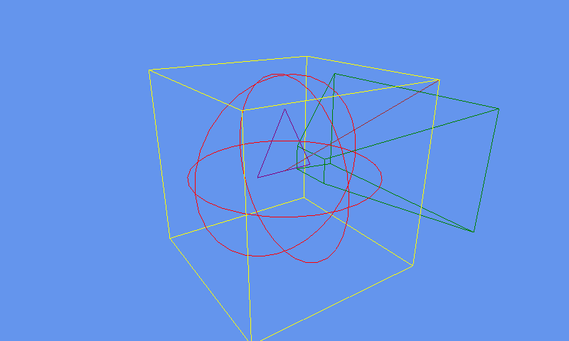

Shape Rendering
Ported from Microsoft's XNA 4.0 Shape Rendering Sample.
Source for this sample on GitHub ↗

Play ▸Opens in a new tab and runs in this browser. Click the canvas first so it receives the keyboard.
About this sample
Games often draw temporary geometry to inspect collision volumes, view frustums and other
otherwise invisible state. This sample supplies a reusable DebugShapeRenderer
for lines, triangles, boxes, spheres and frustums.
Any part of a game can queue a shape for the next draw. A shape can last for one frame or for a chosen lifetime, after which its cached object is recycled. The renderer combines the queued lines into as few draw calls as possible while respecting XNA's Reach-profile limit.
The original marks the renderer entry points with Conditional("DEBUG"), so the
visible demonstration is its original Debug configuration. This browser package keeps that
exact source behavior while using optimized, symbol-free Release code generation for static
hosting.
Controls
| Action | Keyboard | Gamepad |
|---|---|---|
| Exit | Esc | Back |
In the browser, exiting ends the sample rather than closing the tab.